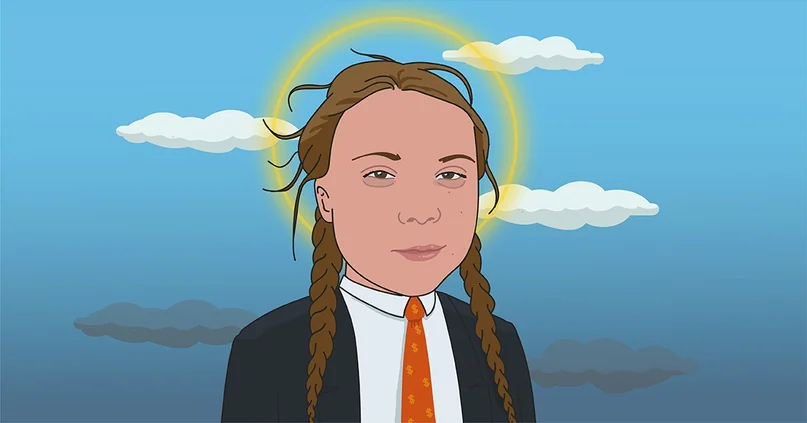
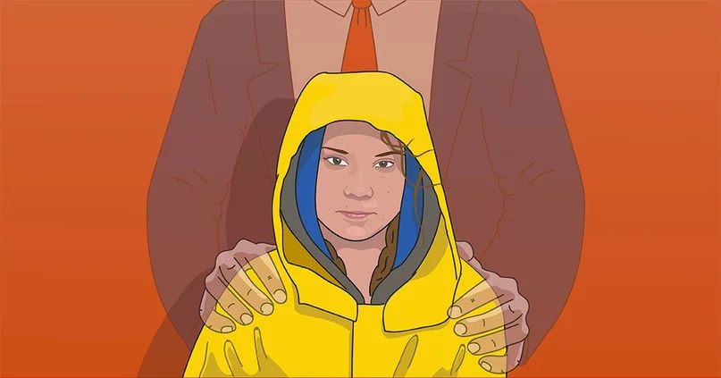
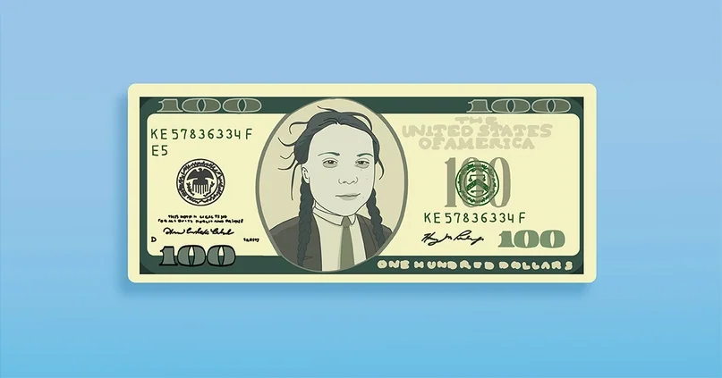

Школьница, раздающая безответственному старичью люлей, экологический активист, — то ли пророк, то ли марионетка: Гоша Володин решил немножко порассуждать об очередной современной Жанне д'Арк
Шестнадцатилетнюю Грету Тунберг, родом из Швеции, последние дни обсуждают все кому не лень. Это та самая девочка, которая предъявляет взрослым за их несостоятельность и непонимание важнейших вопросов климата прямо с трибун ООН. Одетая в ярко-розовую рубашку Грета очень экспрессивно ругает солидных дядь и теть.

Начинает она свою речь с угрозы в стиле мафиозных фильмов: «We'll be watching you!» («Мы будем наблюдать за вами!»). Для полноты ощущений можно прокрутить эту фразу у себя в голове голосом Роберта Де Ниро.
Публика в зале хихикает и одобрительно рукоплещет, но девочка хмурит брови и дает понять, что она, черт возьми, не шутит. Где-то к середине речи дипломаты и политиканы, возможно, думают о том, как бы умотать с этого заседания домой — на личном самолете в свои дорогие дома, где их ждут жены и кондиционеры. Но вроде как речь толкает ребенок, поэтому приходится сидеть, хавать с лопат и смущенно улыбаться.
После этой пламенной речи западные мейнстрим-медиа начали возносить до небес смелую девочку и буквально делать из нее Жанну д'Арк. Российские СМИ тоже не растерялись: принялись разоблачать, гнусно указывая на ее болезни (у Тунберг синдром Аспергера, обсессивно-компульсивное расстройство и селективный мутизм). Дональд Трамп, в свою очередь, в который раз подтвердил звание тролля мирового уровня: написал в Твиттере, что Грета выглядит, как «очень счастливая девочка, надеющаяся на светлое и замечательное будущее». Школьники и вовсе выиграли больше всех: подобные «школьные забастовки за климат» или «пятницы за будущее» теперь проводятся почти по всему миру. Отныне можно абсолютно легально прогуливать занятия.
Честно говоря, когда наблюдаешь за бурей эмоций на лице этого маленького борца за общее будущее, становится не по себе. Хоть экзорциста зови. Одень Тунберг в нацисткую форму и дай огнемет в руки — она покажет всем несостоятельным взрослым, где раки зимуют.
Вот Грета смотрит на нас с обложки британского GQ. С ледяным взглядом, подобно дяде Сэму или британскому Лорду Китченеру на знаменитых плакатах военного времени, она указывает пальцем на каждого, кто недостаточно сильно радеет за мать-природу. «Вы меня слышите?» — вопрошает Тунберг. Еще как слышим! И даже побаиваемся. Только побаиваемся не глобального потепления, а пошлости и поверхностности людей.
Смотришь на все это, и вроде бы складывается вполне ясная картина. Есть проблема изменения климата, которая, как мы должны понимать, — первостепенна и перекрывает все остальные мировые беды вместе с нищетой и голодом. Вот сидят жадные политиканы, которые не хотят ничего делать (или не знают, что предпринять). И есть девочка-вундеркинд, уверенно и, казалось бы, абсолютно обоснованно ругающая взрослых аки нашкодивших сорванцов. Вроде все справедливо. Круто же, когда маленькая девочка дает по соплям зажравшимся бюрократам! Но давайте попробуем задать некоторые вопросы и разобраться в ситуации получше.
Внезапное появление Греты в СМИ озадачивает — статус знаменитости Тунберг связан со счастливой случайностью или тщательно организованной PR-компанией? Как так вышло, что ребенок в довольно грубой манере отчитывает людей, которые в вопросе климата, предположим, понимают гораздо больше? И, как говорится, — кому это выгодно?

20 августа 2018 года Грета устроила одиночный пикет у здания парламента Швеции, держа в руках нарисованную от руки деревянную табличку с надписью skolstrejk för klimatet (школьная забастовка за климат). В первый день забастовки к Грете подходили случайные прохожие, ею интересовались журналисты. По официальной версии — известный шведский PR-специалист Ингмар Рентцхог увидел в девушке потенциал и сделал пост с ее фотографией у себя в Facebook. Запись набрала 14 тысяч лайков и почти шесть тысяч репостов.
Шведский журналист Андреас Хенрикссон оказался первым, кто расследовал PR-компанию Ингмара Рентцхога. Оказалось, что Рентцхог — основатель «зеленой» социальной сети We Don’t Have Time. Эта организация стремится объединить «более 100 миллионов участников, которые будут влиять на политиков и бизнес-лидеров, чтобы делать больше для борьбы с изменением климата». По крайней мере, так написано на официальном сайте компании.
Согласно расследованию французского издания Reporterre, le quotidien de l'écologie, которое специализируется на вопросах экологии, — донорами этой организации являются члены двух взаимосвязанных семей. Это Перссоны, — дети миллиардера Свена Олофа Перссона, который заработали свой капитал на продаже автомобилей (Bilbolaget Nord AB), и семейство Рентцхогов. Две семьи инвесторов не имеют никакого отношения к защите окружающей среды, они — специалисты по финансам. Все те же проклятые капиталисты, против которых борется Грета.
24 августа, четыре дня спустя после знакового пикета, вышла автобиография Тунбергов — под названием Scener ur hjärtat («Сцены из сердца»). Книга написана мамой Греты (Маленой Эрнман, в прошлом участницей Евровидения), ее отцом (актером Сванте Тунбергом), сестрой Беатой и самой Гретой.
Также упомянутый выше шведский журналист Хенрикссон первым указал на то, что пиарщик Рентцхог, вероятно, уже знал Тунберг и ее семью. В мае 2018 года он принимал участие в той же конференции по изменению климата, в которой участвовала мама Греты. Позже Рентцхог утверждал, что действительно помогал Тунберг с пиаром, но не участвовал в планировании пикета. Сама Грета писала в Facebook, что забастовка была полностью ее идеей.
В конце прошлого года Рентцхог был обвинен в использовании имени Тунберг для привлечения более 1,5 миллиона долларов (10 миллионов шведских крон) от инвесторов в компанию, которая жертвует только 10 процентов своей прибыли в благотворительный фонд.
В течение года Тунберг перешла от одиночного протеста у парламента Швеции к выступлению в Давосе (туда она приехала на поезде), а также встретилась с Арнольдом Шварценеггером, генеральным секретарем ООН и многими мировыми лидерами. Затем ее пригласили в США. Поезда туда, как известно, не ходят, поэтому принц Монако отвез Грету в Америку на построенной по заказу Ротшильдов яхте.
И все эти важные личности почему-то «прислушиваются» к ребенку, который еще не окончил школу. Чем же Грета отличается от остальных детей? Откуда у людей взялось убеждение, что ее мнение так важно и значимо? Хотя в современных СМИ уже всерьез обсуждают право голоса шестилетних детей, так что, возможно, предыдущий вопрос является риторическим. Следует спросить прямо: что нам пытаются втереть?
Посмотрите, как старательно Грета избегает насущных вопросов и акцентирует внимание на спорной проблеме изменения климата — это в последние пару десятилетий очень легко продать. Вопрос озоновых дыр поднимался еще со времен предвыборной кампании Альберта Гора. Где эти озоновые дыры теперь — непонятно. Может, затянулись сами. Или деньги на предвыборную кампанию действительно помогли.

Между прочим, в мире есть молодые люди, которые не имеют подобной поддержки, но борются за то, во что верят. Одна из таких активисток — шестнадцатилетняя Изабелла Нильссон Ярванди. Она активно участвует в протестах шведских желтых жилетов (направленных против капиталистов), общеевропейском движении против злоупотребления властью, массовой миграции и глобализации. Изабелла не получает и доли внимания, которое получает Грета Тунберг. Зачем ехать в Aфрику, зачем посещать детдома? Можно просто сказать что-то про глобальное потепление, и за тобой потянутся массы. Ведь оно глобальное, черт побери! Никто же не хочет тонуть в ледниках, забывая о голоде и нищете.
К сожалению, последователи Греты — это никакие не борцы за свободу, а обычные нарциссы.
Людям достаточно просто ляпнуть лозунг в соцсетях — и он привлечет массы глупых миллениалов, которые всегда хотят быть на виду и чем-то выделяться.
Выступая с трибуны ООН с обвинениями в краже детства, Грета Тунберг как будто не понимает, что все удобства, которыми она пользуется, были созданы людьми, «отнявшими» ее мечту. Грета словно не осознает, что для того чтобы случились перемены, о которых она так яростно говорит, надо заставить весь мир жить по-другому. И тут два варианта: совершить мировую революцию (при которой, в первую очередь, будет несладко кураторам Греты) или устроить диктатуру и репрессии. И да, тогда эти глупые взрослые будут тратить на межатлантические путешествия недели. А самолеты куда? Видимо, останутся стоять на земле, чтобы ребятишки, у которых перестанут отбирать детство, могли в них играть в прятки.